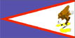

{kind=link}


![[Country map of American Samoa]](../maps/aq-map.jpg)
| American Samoa |
 |
|
| | |
| Introduction |
Background: Settled as early as 1000 B. C., Samoa was "discovered" by European explorers in the 18th century. International rivalries in the latter half of the 19th century were settled by an 1899 treaty in which Germany and the US divided the Samoan archipelago. The US formally occupied its portion - a smaller group of eastern islands with the excellent harbor of Pago Pago - the following year.
| Geography |
Location: Oceania, group of islands in the South Pacific Ocean, about one-half of the way from Hawaii to New Zealand
Geographic coordinates: 14 20 S, 170 00 W
Map references: Oceania
Area:
total:
199 sq km
land:
199 sq km
water:
0 sq km
note:
includes Rose Island and Swains Island
Area - comparative: slightly larger than Washington, DC
Land boundaries: 0 km
Coastline: 116 km
Maritime claims:
exclusive economic zone:
200 nm
territorial sea:
12 nm
Climate: tropical marine, moderated by southeast trade winds; annual rainfall averages about 3 m; rainy season from November to April, dry season from May to October; little seasonal temperature variation
Terrain: five volcanic islands with rugged peaks and limited coastal plains, two coral atolls (Rose Island, Swains Island)
Elevation extremes:
lowest point:
Pacific Ocean 0 m
highest point:
Lata 966 m
Natural resources: pumice, pumicite
Land use:
arable land:
5%
permanent crops:
10%
permanent pastures:
0%
forests and woodland:
70%
other:
15% (1993 est.)
Irrigated land: NA sq km
Natural hazards: typhoons common from December to March
Environment - current issues: limited natural fresh water resources; the water division of the government has spent substantial funds in the past few years to improve water catchments and pipelines
Geography - note: Pago Pago has one of the best natural deepwater harbors in the South Pacific Ocean, sheltered by shape from rough seas and protected by peripheral mountains from high winds; strategic location in the South Pacific Ocean
| People |
Population: 65,446 (July 2000 est.)
Age structure:
0-14 years:
39% (male 13,071; female 12,304)
15-64 years:
56% (male 18,358; female 18,597)
65 years and over:
5% (male 1,631; female 1,485) (2000 est.)
Population growth rate: 2.53% (2000 est.)
Birth rate: 25.81 births/1,000 population (2000 est.)
Death rate: 4.26 deaths/1,000 population (2000 est.)
Net migration rate: 3.74 migrant(s)/1,000 population (2000 est.)
Sex ratio:
at birth:
1.06 male(s)/female
under 15 years:
1.06 male(s)/female
15-64 years:
0.99 male(s)/female
65 years and over:
1.1 male(s)/female
total population:
1.02 male(s)/female (2000 est.)
Infant mortality rate: 10.63 deaths/1,000 live births (2000 est.)
Life expectancy at birth:
total population:
75.12 years
male:
70.66 years
female:
79.84 years (2000 est.)
Total fertility rate: 3.6 children born/woman (2000 est.)
Nationality:
noun:
American Samoan(s)
adjective:
American Samoan
Ethnic groups: Samoan (Polynesian) 89%, Caucasian 2%, Tongan 4%, other 5%
Religions: Christian Congregationalist 50%, Roman Catholic 20%, Protestant and other 30%
Languages:
Samoan (closely related to Hawaiian and other Polynesian languages), English
note:
most people are bilingual
Literacy:
definition:
age 15 and over can read and write
total population:
97%
male:
98%
female:
97% (1980 est.)
| Government |
Country name:
conventional long form:
Territory of American Samoa
conventional short form:
American Samoa
abbreviation:
AS
Data code: AQ
Dependency status: unincorporated and unorganized territory of the US; administered by the Office of Insular Affairs, US Department of the Interior
Government type: NA
Capital: Pago Pago
Administrative divisions: none (territory of the US); there are no first-order administrative divisions as defined by the US Government, but there are three districts and two islands* at the second order; Eastern, Manu'a, Rose Island*, Swains Island*, Western
Independence: none (territory of the US)
National holiday: Territorial Flag Day, 17 April (1900)
Constitution: ratified 1966, in effect 1967
Legal system: NA
Suffrage: 18 years of age; universal
Executive branch:
chief of state:
President William Jefferson CLINTON of the US (since 20 January 1993) and Vice President Albert GORE, Jr. (since 20 January 1993)
head of government:
Governor Tauese P. SUNIA (since 3 January 1997) and Lieutenant Governor Togiola TULAFONO (since 3 January 1997)
cabinet:
NA
elections:
US president and vice president elected on the same ticket for four-year terms; governor and lieutenant governor elected on the same ticket by popular vote for four-year terms; election last held 3 November 1996 (next to be held 7 November 2000)
election results:
Tauese P. SUNIA elected governor; percent of vote - Tauese P. SUNIA (Democrat) 51%, Peter REID (independent) 49%
Legislative branch:
bicameral Fono or Legislative Assembly consists of the House of Representatives (21 seats - 20 of which are elected by popular vote and 1 is an appointed, nonvoting delegate from Swains Island; members serve two-year terms) and the Senate (18 seats; members are elected from local chiefs and serve four-year terms)
elections:
House of Representatives - last held NA November 1998 (next to be held NA November 2000); Senate - last held 3 November 1996 (next to be held 7 November 2000)
election results:
House of Representatives - percent of vote by party - NA; seats by party - NA; Senate - percent of vote by party - NA; seats by party - NA
note:
American Samoa elects one delegate to the US House of Representatives; election last held 3 November 1998 (next to be held 7 November 2000); results - Eni R. F. H. FALEOMAVAEGA (Democrat) reelected as delegate for a sixth term
Judicial branch: High Court (chief justice and associate justices are appointed by the US Secretary of the Interior)
Political parties and leaders: Democratic Party [leader NA]; Republican Party [leader NA]
International organization participation: ESCAP (associate), Interpol (subbureau), IOC, SPC
Diplomatic representation in the US: none (territory of the US)
Diplomatic representation from the US: none (territory of the US)
Flag description: blue, with a white triangle edged in red that is based on the outer side and extends to the hoist side; a brown and white American bald eagle flying toward the hoist side is carrying two traditional Samoan symbols of authority, a staff and a war club
| Economy |
Economy - overview: This is a traditional Polynesian economy in which more than 90% of the land is communally owned. Economic activity is strongly linked to the US, with which American Samoa conducts the great bulk of its foreign trade. Tuna fishing and tuna processing plants are the backbone of the private sector, with canned tuna the primary export. Transfers from the US Government add substantially to American Samoa's economic well-being. Attempts by the government to develop a larger and broader economy are restrained by Samoa's remote location, its limited transportation, and its devastating hurricanes. Tourism, a developing sector, may be held back by the current financial difficulties in East Asia.
GDP: purchasing power parity - $150 million (1995 est.)
GDP - real growth rate: NA%
GDP - per capita: purchasing power parity - $2,600 (1995 est.)
GDP - composition by sector:
agriculture:
NA%
industry:
NA%
services:
NA%
Population below poverty line: NA%
Household income or consumption by percentage share:
lowest 10%:
NA%
highest 10%:
NA%
Inflation rate (consumer prices): NA%
Labor force: 13,949 (1996)
Labor force - by occupation: government 33%, tuna canneries 34%, other 33% (1990)
Unemployment rate: 12% (1991)
Budget:
revenues:
$121 million (37% in local revenue and 63% in US grants)
expenditures:
$127 million, including capital expenditures of $NA (FY96/97)
Industries: tuna canneries (largely dependent on foreign fishing vessels), handicrafts
Industrial production growth rate: NA%
Electricity - production: 125 million kWh (1998)
Electricity - production by source:
fossil fuel:
100%
hydro:
0%
nuclear:
0%
other:
0% (1998)
Electricity - consumption: 116 million kWh (1998)
Electricity - exports: 0 kWh (1998)
Electricity - imports: 0 kWh (1998)
Agriculture - products: bananas, coconuts, vegetables, taro, breadfruit, yams, copra, pineapples, papayas; dairy products, livestock
Exports: $313 million (1996)
Exports - commodities: canned tuna 93%
Exports - partners: US 99.6%
Imports: $471 million (1996)
Imports - commodities: materials for canneries 56%, food 8%, petroleum products 7%, machinery and parts 6%
Imports - partners: US 62%, Japan 9%, NZ 7%, Australia 11%, Fiji 4%, other 7%
Debt - external: $NA
Economic aid - recipient: $NA; note - important financial support from the US
Currency: 1 US dollar (US$) = 100 cents
Exchange rates: US currency is used
Fiscal year: 1 October - 30 September
| Communications |
Telephones - main lines in use: 10,000 (1994)
Telephones - mobile cellular: 1,200 (1994)
Telephone system:
domestic:
good telex, telegraph, facsimile and cellular telephone services; domestic satellite system with 1 Comsat earth station
international:
satellite earth station - 1 Intelsat (Pacific Ocean)
Radio broadcast stations: AM 1, FM 1, shortwave 0 (1998)
Radios: 57,000 (1997)
Television broadcast stations: 1 (1997)
Televisions: 14,000 (1997)
Internet Service Providers (ISPs): NA
| Transportation |
Railways: 0 km
Highways:
total:
350 km
paved:
150 km
unpaved:
200 km
Ports and harbors: Aunu'u (new construction), Auasi, Faleosao, Ofu, Pago Pago, Ta'u
Merchant marine: none (1999 est.)
Airports: 4 (1999 est.)
Airports - with paved runways:
total:
2
2,438 to 3,047 m:
1
under 914 m:
1 (1999 est.)
Airports - with unpaved runways:
total:
2
under 914 m:
2 (1999 est.)
| Military |
Military - note: defense is the responsibility of the US
| Transnational Issues |
Disputes - international: none